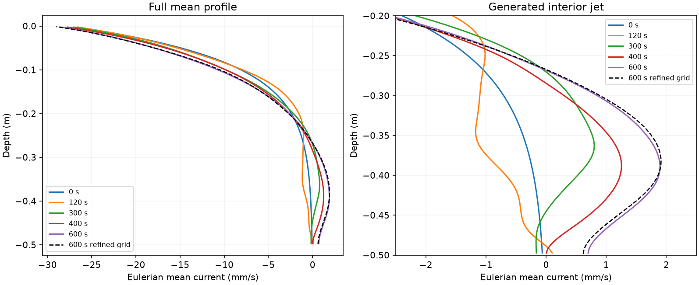
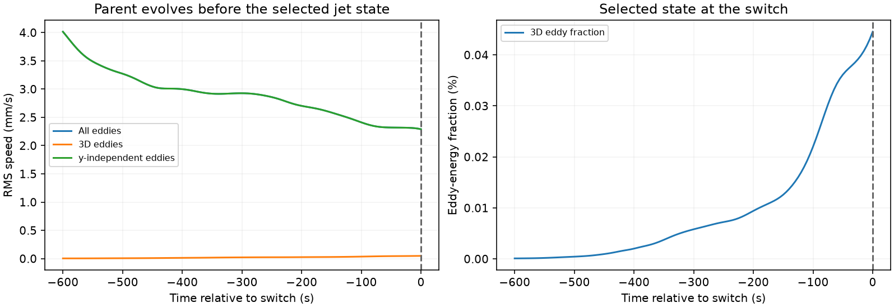
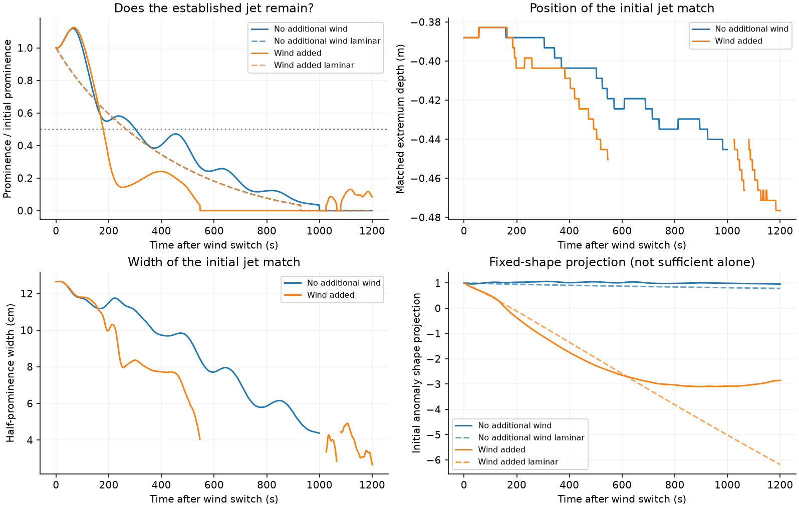
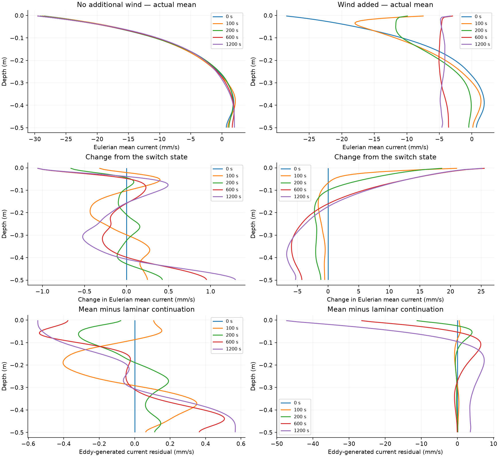
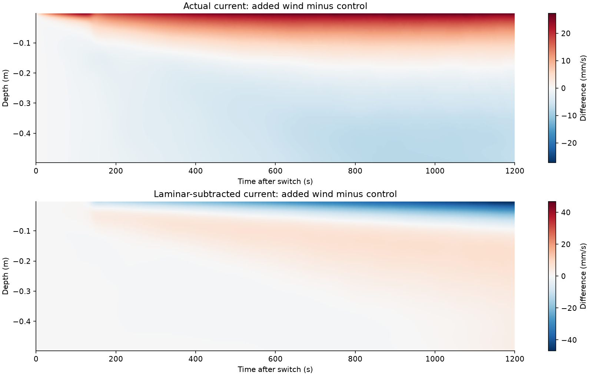
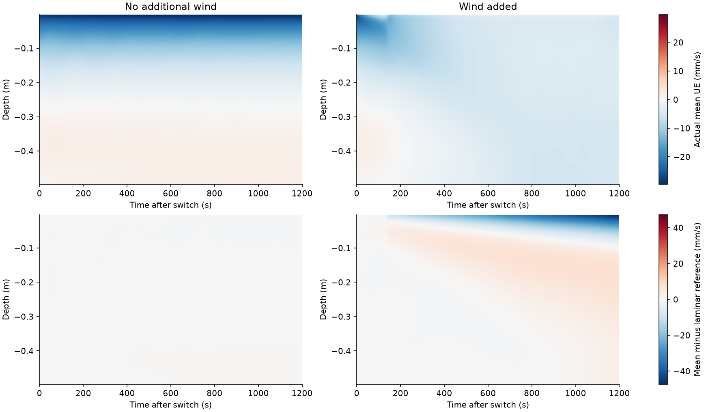
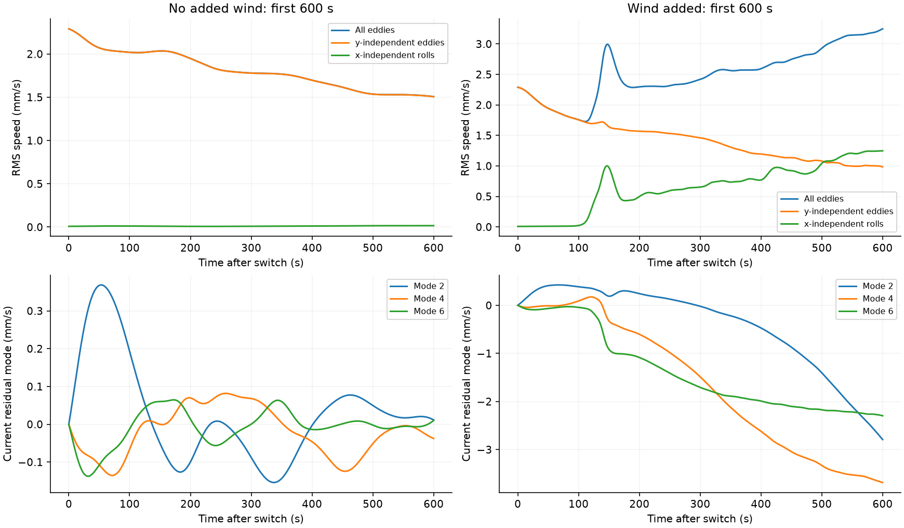
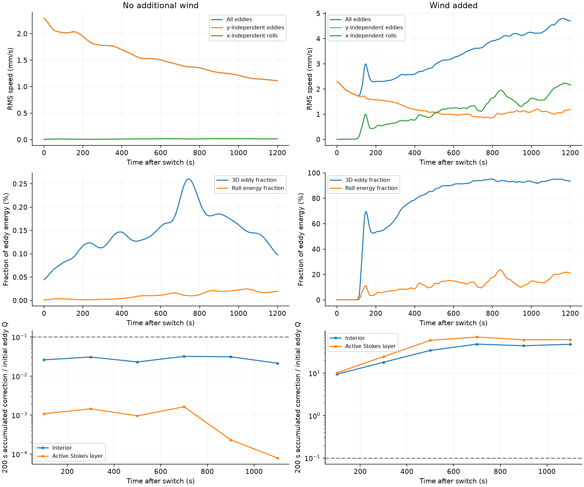
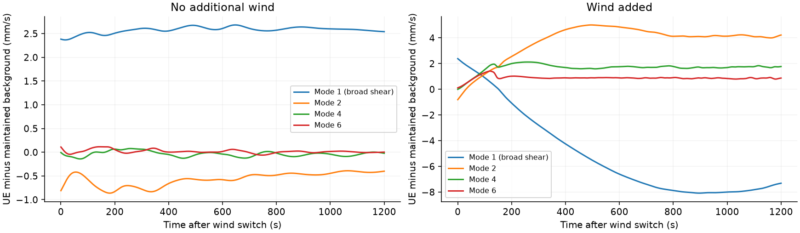
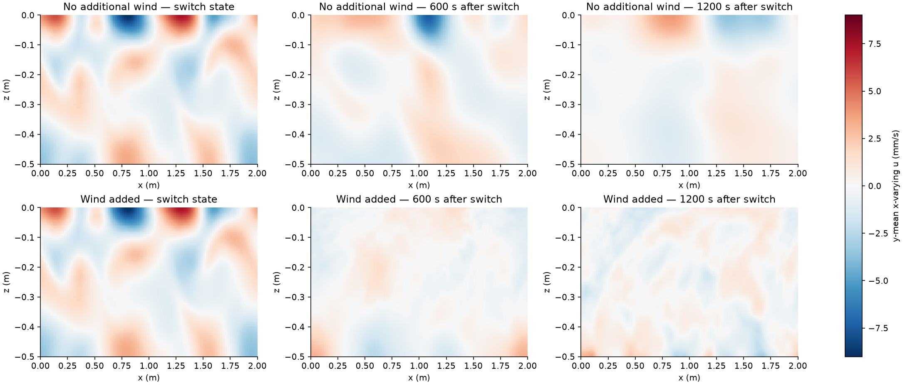

Does added wind disrupt an established jet?
Two three-dimensional branches start from the same current jet that developed from a monotonic mean profile. The control continues the original dynamics. The other adds a surface wind stress and a spatially uniform return force that balances its net momentum input. Stokes drift, viscosity, the maintained background and the original boundary gradients remain identical.
| Branch | Status | Verified outputs |
|---|---|---|
| no-wind | complete | Statistics · Time series · Profiles |
| wind-on | complete | Statistics · Time series · Profiles |









![The residual excludes the maintained laminar continuation and starts at zero. Modes 2–8 carry interior structure; mode 1 is broad shear. Integrated advective work and viscous damping diagnose the newly accumulated residual, not all of the energy in the pre-existing jet. Sampled-tendency closure: no-wind: full mean budget quadrature 0.00244%, maximum low-mode residual budget 0.00501%; wind-on: full mean budget quadrature 0.0278%, maximum low-mode residual budget 0.0161%. Tendency integration uses the actual saved cadence (1 s in production); initial wall-adjustment quadrature is checked, and an unclosed budget is not evidence of physical production.](band-budget.png)

What can we conclude?
Added wind accelerates erosion of this established jet, after strong three-dimensional motion develops. Both branches completed from the same verified native restart. The added friction velocity is 2 mm/s; waves, viscosity and the original background maintenance are identical. Times below are measured from the switch.
| Diagnostic | No additional wind | Wind added |
|---|---|---|
| Below half initial prominence, sustained for at least 200 s | 302 s | 179 s |
| Prominence remaining at 200 s | 55.2% | 32.0% |
| First disappearance of the matched interior maximum | 1000 s | 547 s |
| 3D fraction of eddy energy at 600 s | 0.158% | 90.8% |
In the wind branch, the 3D energy fraction exceeds 10% at 119 s and 50% at 136 s. The roll RMS speed first exceeds 1 mm/s at 147 s, before the sustained half-prominence loss at 179 s. The complete accumulated 3D correction is large with wind and remains small in the control.
The direct laminar response does not explain the accelerated erosion. The maintained laminar continuations both cross half-prominence at 266 s, with essentially identical deep-jet prominence during the early response. The wind-driven advective changes therefore accelerate loss beyond that reference; control eddy transport modestly delays viscous erosion.
This supports competition between wind-driven three-dimensional motion and the established jet in this candidate. It does not yet isolate the 3D feedback term from wind-induced changes in the two-dimensional eddies, or determine a critical forcing. The control eventually loses its maximum despite small 3D feedback: that is compatible with a necessary-condition argument, because weak 3D feedback does not prevent viscous decay.
The final wind-on prominence of 8.5% belongs to a weak maximum near the bottom after the original match has been absent for hundreds of seconds; it is not evidence of better survival. Mean-momentum budget residuals are 0.0024% for the control and 0.0278% with wind. These are single-realization results; the new wind response has not been qualified by a refined-grid or ensemble comparison.
Interpretation added after completion on 30 October 2026 from the frozen source a9775218799e02ea and the published time series. Simulation source, protocol and numerical outputs are unchanged.
Full numerical assessment · Frozen protocol · Branch configuration · Provenance